全文翻译
摘要
扩散模型凭借其卓越的生成能力，近期在图像合成领域获得了前所未有的关注。尽管性能强大，但这些模型通常会产生高昂的计算成本，这主要归因于其序列性去噪过程和庞大的模型规模。传统的扩散模型压缩方法通常需要大量的再训练，存在成本和可行性方面的挑战。在本文中，我们提出了DeepCache，这是一种全新的无需训练的范式，它从模型架构的角度加速扩散模型。DeepCache利用了扩散模型序列性去噪步骤中固有的时间冗余性，通过在相邻去噪阶段缓存和检索特征，从而减少冗余计算。借助U-Net的特性，我们在以极低成本更新低层级特征的同时，重用高层级特征。这种创新策略使得Stable Diffusion v1.5的速度提升了2.3倍，而CLIP分数仅下降0.05；LDM-4-G在ImageNet上的速度提升了4.1倍，FID仅轻微下降0.22。我们的实验还表明，DeepCache优于现有的需要再训练的剪枝和蒸馏方法，并且与当前的采样技术兼容。此外，我们发现，在相同的吞吐量下，DeepCache与DDIM或PLMS结合时，能够取得相当甚至略有提升的结果。代码可在https://github.com/horseee/DeepCache获取。
1. 引言
近年来，扩散模型[9, 17, 57, 59]已成为生成建模领域的一项关键进展，因其令人印象深刻的能力而受到广泛关注。这些模型在各种应用中展现出了显著的效能，被用于生成图像[19, 60, 64]、文本[11, 28]、音频[6, 44]和视频[18, 36, 56]。扩散模型促成了大量颇具吸引力的应用，包括但不限于图像编辑[2, 20, 38]、图像超分辨率增强[26, 51]、图像到图像的转换[7, 49]、文本到图像生成[41, 45, 46, 50]以及文本到3D生成[30, 35, 43]。
尽管扩散模型具有显著的有效性，但正如[29]所强调的，其相对较慢的推理速度仍然是更广泛应用的主要障碍。核心挑战源于其反向阶段所需的逐步去噪过程，这限制了并行解码能力[55]。加速这些模型的努力主要集中在两种策略上：减少采样步骤数量，如方法[34, 39, 52, 58]所示；以及通过模型剪枝、蒸馏和量化等方法降低每一步的模型推理开销[10, 13, 21]。
我们的目标是通过减小每一步的模型规模来提高扩散模型的效率。以往的扩散模型压缩方法侧重于通过全面的结构分析重新设计网络架构[29]，或者将频率先验纳入模型设计[66]，这些方法在图像生成方面取得了有前景的结果。然而，它们需要大规模数据集来重新训练这些轻量级模型。[10, 21]所探索的基于剪枝的方法将数据和训练需求减少到完整训练的0.1%。另外，[32]为不同步骤采用自适应模型，这也是一种潜在的解决方案。但是，它依赖于一组预训练模型或需要对子网络进行优化[65]。这些方法可以降低构建新的轻量级模型的成本，但再训练过程仍然不可避免，这使得压缩成本高昂，并且对于大规模预训练扩散模型（如Stable Diffusion[47]）来说不太实用。
为此，我们关注一个具有挑战性的课题：如何在不进行额外训练的情况下显著降低每个去噪步骤的计算开销，从而实现扩散模型的无成本压缩？为实现这一目标，我们将注意力转向扩散模型反向去噪过程的内在特性，观察到连续步骤之间的高层特征具有显著的时间一致性。我们发现这些高层特征甚至是可缓存的，只需计算一次，就可以在后续步骤中重新检索使用。利用U-Net的结构特性，可以缓存高层特征，同时在每个去噪步骤中更新低层特征。通过这种方式，可以在不进行任何训练的情况下显著提高扩散模型的效率和速度。
总之，我们引入了一种新的扩散模型加速范式，为无需训练的扩散模型加速提供了新视角。它不仅与现有的快速采样器兼容，而且在生成能力方面显示出相当或更优的潜力。本文的贡献包括：
- 我们提出了一种简单有效的加速算法，名为DeepCache，用于在运行时动态压缩扩散模型，从而在不增加训练负担的情况下提高图像生成速度。
- DeepCache利用了高层特征之间的时间一致性。借助可缓存的特征，有效减少了冗余计算。此外，我们引入了一种非均匀的1:N策略，专门针对长缓存间隔进行了优化。
- DeepCache在多种数据集上得到了验证，包括CIFAR、LSUN-Bedroom/Churches、ImageNet、COCO2017和PartiPrompt，并在DDPM、LDM和Stable Diffusion上进行了测试。实验表明，在相同的吞吐量下，我们的方法优于需要再训练的剪枝和蒸馏算法。
2. 相关工作
在生成建模领域，高维图像生成取得了显著的发展。起初，生成对抗网络（GANs）[1, 12]和变分自编码器（VAEs）[16, 22]引领了这一领域，但由于不稳定性和模式崩溃问题[23]，它们面临着可扩展性方面的挑战。近年来，扩散概率模型[9, 17, 47, 61]取得了领先地位，其在图像生成方面表现更为出色。然而，反向扩散过程[59]的固有特性减缓了推理速度。目前的研究主要集中在两种加速扩散模型推理的方法上。
优化采样效率
该方法侧重于减少采样步骤的数量。DDIM[58]通过探索非马尔可夫过程（与神经常微分方程相关）来减少这些步骤。研究[3, 33, 34, 69]进一步深入研究随机微分方程（SDE）或常微分方程（ODE）的快速求解器，以实现扩散模型的高效采样。一些方法通过逐步蒸馏模型来减少时间步长[52]，或者用单步变分自编码器（VAE）替代剩余步骤[37]。一致性模型[62]仅通过一次模型评估就能将随机噪声转换为初始图像。诸如DSNO[70]和ParaDiGMS[55]等并行采样技术采用傅里叶神经算子和皮卡迭代进行并行解码。
优化结构效率
这种方法旨在减少每个采样步骤的推理时间。它利用了扩散剪枝（Diff-pruning）[10]中的结构剪枝策略和快速融合（SnapFusion）[29]中的高效结构演化等方法。谱扩散（Spectral Diffusion）[66]通过融入频率动态和先验知识来改进架构设计。与这些在每个步骤使用统一模型的方法不同，[32]提出在不同步骤使用不同的模型，这些模型选自扩散模型库。[27, 40, 63]探索了扩散中的早停机制，而量化技术[13, 54]则专注于模型权重和激活的低精度数据类型。此外，[4]和[5]提出了新的方法来聚焦输入，前者为每个像素采用独特的前向过程，后者基于相似性合并令牌以提高注意力模块的计算效率。我们的方法旨在最小化每步的平均推理时间。独特之处在于，我们的方法大幅减小了每步的平均模型规模，在无需重新训练的情况下加速了去噪过程。
3. 方法
3.1. 预备知识
正向和反向过程：扩散模型[17]通过一系列随机扩散步骤模拟图像生成过程。扩散模型的核心思想是从随机噪声开始，逐步对其进行优化，直到它与目标分布中的样本相似。在正向扩散过程中，从真实分布中采样一个数据点$x_0 \sim q(x)$，在T步中逐渐加入高斯噪声：
其中t是当前时间步，$\{\beta_t\}$是噪声调度。反向扩散过程通过对$q(x_{t-1} | x_t)$进行建模，将随机噪声$x_T \sim N(0, I)$去噪为目标分布。在每个反向步骤t，条件概率分布由网络$\epsilon_\theta(x_t, t)$近似，该网络以时间步t和先前输出$x_t$作为输入：
其中$\alpha_t = 1 - \beta_t$，$\overline{\alpha}_t = \prod_{i=1}^T \alpha_i$。通过迭代应用该过程，逐步降低当前$x_t$的噪声，当达到$x_0$时，使其接近真实数据点。
U-Net中的高层和低层特征：U-Net[48]最初是为生物医学图像分割而提出的，它展示出强大的融合低层和高层特征的能力，这要归功于跳跃连接。U-Net构建在堆叠的下采样和上采样块上，这些块将输入图像编码为高层表示，然后对其进行解码以用于下游任务。块对表示为$\{D_i\}_{i=1}^d$和$\{U_i\}_{i=1}^d$，它们通过额外的跳跃路径相互连接。这些跳跃路径直接将来自$D_i$的丰富且相对更多的低层信息传递到$U_i$。在U-Net架构的前向传播过程中，数据同时通过两条路径：主分支和跳跃分支。这些分支在连接模块处汇合，主分支提供来自先前上采样块$U_{i+1}$的经过处理的高层特征，跳跃分支提供来自对称块$D_i$的相应特征。因此，U-Net模型的核心是来自跳跃分支的低层特征和来自主分支的高层特征的连接，形式化为：
3.2. 序列去噪中的特征冗余
扩散模型中去噪过程的固有序列性是推理速度的主要瓶颈。先前的方法主要采用跳过某些步骤的策略来解决这个问题。在这项工作中，我们重新审视整个去噪过程，试图发现可以优化以提高推理效率的特定属性。
观察结果：去噪过程中的相邻步骤在高层特征上表现出显著的时间相似性。
在图2中，我们提供了与这一观察相关的实证证据。实验阐明了两个主要见解：1）去噪过程中相邻步骤之间存在明显的时间特征相似性，这表明连续步骤之间的变化通常很小；2）无论我们使用哪种扩散模型，对于每个时间步，至少有10%的相邻时间步与当前步骤具有高度相似性（>0.95），这表明某些高层特征的变化速度很慢。这种现象可以在许多成熟的模型中观察到，如Stable Diffusion、LDM和DDPM。在用于LSUN-Churches和LSUN-Bedroom的DDPM中，某些时间步甚至与80%的其他步骤表现出高度相似性，如图2（c）中的绿线所示。
| 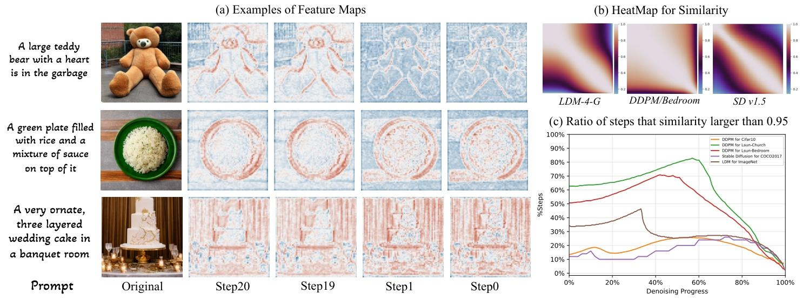 |
|---|
| 图2. (a) Stable Diffusion中上行采样块U₂的特征图示例。我们展示了相邻步骤对的对比，强调了去噪过程中固有的不变性。(b) 三种典型扩散模型中U₂特征在所有步骤间的相似性热力图。(c) 与当前步骤相似性大于0.95的步骤所占百分比。 |
基于这些观察结果，我们的目标是利用这一有利特性来加速去噪过程。我们的分析表明，计算结果往往会产生与前一步骤非常相似的特征，从而凸显出存在可优化的冗余计算。我们认为，投入大量计算资源来重新生成这些相似的特征图是一种低效行为。虽然产生了巨大的计算开销，但收益甚微，这表明在扩散模型的速度方面存在提高效率的潜在空间。
| 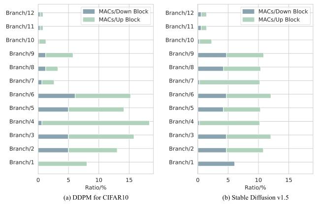 |
|---|
| 图4. 每个跳跃分支的MACs，在用于CIFAR10的DDPM和Stable Diffusion V1.5上评估得到。 |
3.3. 用于扩散模型的深度缓存（DeepCache）
我们引入了DeepCache，这是一种简单有效的方法，它利用反向扩散过程中步骤之间的时间冗余来加速推理。我们的方法从计算机系统中的缓存机制中汲取灵感，包含一个为随时间变化极小的元素设计的存储组件。将其应用于扩散模型中，我们通过有策略地缓存缓慢演化的特征来消除冗余计算，从而避免在后续步骤中进行重复计算。
为实现这一目标，我们将注意力转向U-Net内的跳跃连接，它天生具有双路径优势：主分支需要大量计算来遍历整个网络，而跳跃分支只需经过一些浅层，因此计算负载非常小。主分支中显著的特征相似性使我们能够重用已经计算的结果，而不是为所有时间步重复计算。
去噪中的可缓存特征：为了使这一想法更加具体，我们研究两个连续时间步t和$t-1$的情况。根据反向过程，$x_{t-1}$将基于先前的结果$x_t$有条件地生成。首先，我们以常规方式生成$x_t$，其中计算在整个U-Net中进行。为了获得下一个输出$x_{t-1}$，我们检索在先前的$x_t$中产生的高层特征。更具体地说，考虑U-Net中的一个跳跃分支m，它连接$D_m$和$U_m$，我们将时间步t的上采样块的特征图缓存如下：
这是时间步t主分支的特征。这些缓存的特征将被用于后续步骤的网络推理中。在接下来的时间步$t-1$，推理不会在整个网络上进行；相反，我们执行动态的部分推理。基于先前生成的$x_t$，我们只计算第n个跳跃分支所需的部分，并使用从公式（4）的缓存中检索的操作来替代主分支的计算。因此，$t-1$时间步中$U_m^{t-1}$的输入可以表示为：
这里，$D_m^{t-1}$表示第m个下采样块的输出，如果选择较小的m，它只包含几个层。例如，如果我们在第一层使用DeepCache，即$m=1$，那么我们只需要执行一个下采样块来获得$D_1^{t-1}$。至于第二个特征$F_{cache }^{t}$，不需要额外的计算成本，因为它可以简单地从缓存中检索。我们在图3中说明了上述过程。
| 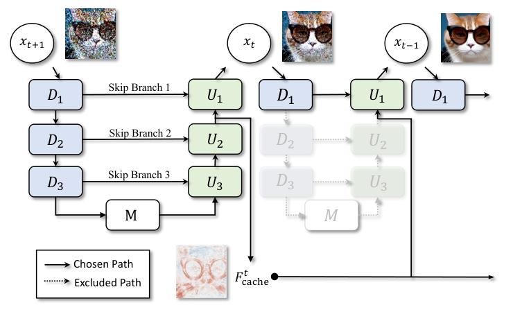 |
|---|
| 图3. DeepCache示意图。在t-1步骤中，通过重用t步骤缓存的特征生成xₜ₋₁，且不执行D₂、D₃、U₂、U₃块以实现更高效的推理。 |
扩展到1:N推理：这个过程不仅限于一步全推理之后跟随一步部分推理的类型。如图2（b）所示，在几个连续步骤中，成对相似性仍然保持较高的值。该机制可以扩展到涵盖更多步骤，计算一次缓存的特征，并在连续的$N-1$个步骤中重用它们，以替代原始的$U_{m+1}^{t-n}(\cdot)$，$n \in \{1, …, N-1\}$。因此，对于所有T个去噪步骤，执行全推理的时间步序列为：
其中$k = \lceil T / N \rceil$表示缓存更新的次数。
非均匀1:N推理：基于1:N策略，我们在强假设——高层特征在连续的N个步骤中不变的情况下，成功加速了扩散的推理。然而，情况并非总是如此，特别是对于较大的N，如图2（c）中的实验证据所示。特征的相似性并非在所有步骤中都保持不变。对于像LDM这样的模型，在大约40%的去噪过程中，特征的时间相似性会显著下降。因此，对于非均匀1:N推理，我们倾向于在那些与相邻步骤相似性相对较小的步骤上进行更多的采样。这里，执行全推理的时间步序列变为：
其中linear_space(s, e, n)均匀地生成从s到e（不包括e）的n个数字，unique_int()将数字转换为整数并确保序列中时间步的唯一性。c是所选中心时间步的超参数。在这个公式中，索引的频率在远离中心时间步时以二次方式变化。值得注意的是，上述策略只是众多潜在策略中的一种。特别是以特定时间步为中心的其他序列，也可以带来类似的图像质量提升。
5. 局限性
我们方法的主要局限性源于其对预训练扩散模型预定义结构的依赖。具体而言，当一个模型最浅层的跳跃分支包含了相当大比例的计算量（例如占整个模型的50%）时，通过我们的方法所能实现的加速比会相对有限。此外，当缓存步骤较大时（例如$N=20$），我们的方法会出现不可忽视的性能下降，这可能会对加速比的上限造成限制。
6. 结论
在本文中，我们提出了一种新颖的范式——DeepCache，用于加速扩散模型。我们的策略利用了扩散模型相邻步骤间高层特征的相似性，从而减少与冗余高层特征计算相关的计算开销。此外，我们利用U-Net架构的结构特性来促进低层特征的更新。通过采用DeepCache，实现了显著的计算速度提升。在多个数据集和扩散模型上的实证评估表明，DeepCache优于其他专注于减小参数规模的压缩方法。此外，所提出的算法与现有的技术（如DDIM和PLMS）相比，在生成质量上表现相当甚至略有提升，从而为该领域提供了新的视角。
| 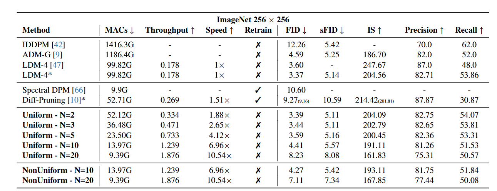 |
|---|
| 表1. 使用LDM-4-G在ImageNet上的类别条件生成质量。此处的基线方法以及我们的方法均采用250步DDIM。为进行全面比较，我们复现了Diff-Pruning，官方结果显示在括号中。* |
| 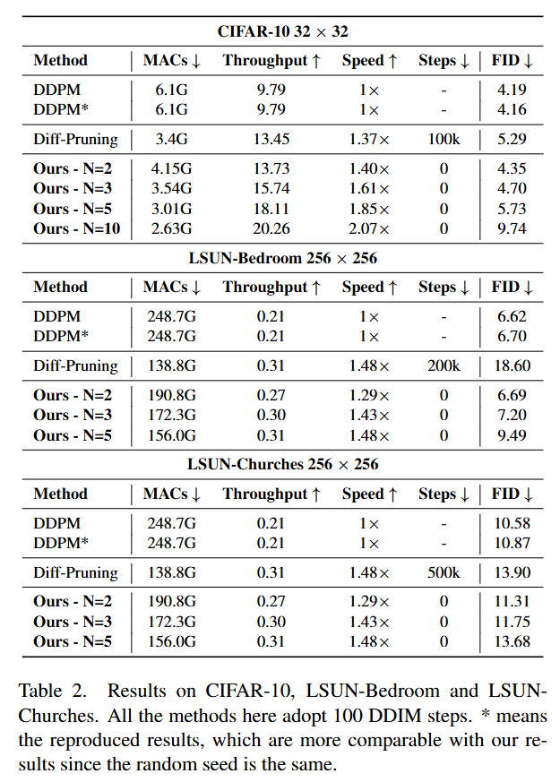 |
|---|
| 表2. 在CIFAR-10、LSUN-Bedroom和LSUN-Churches上的结果。此处所有方法均采用100步DDIM。表示复现结果，由于使用相同的随机种子，与我们的结果更具可比性。* |
| 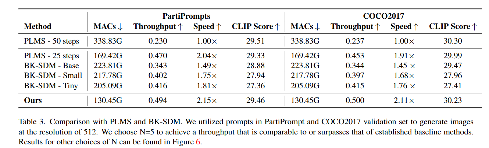 |
|---|
| 表3. 与PLMS和BK-SDM的比较。我们使用PartiPrompt和COCO2017验证集中的提示词生成512分辨率的图像。我们选择N=5以实现与现有基线方法相当或更优的吞吐量。其他N值的结果可参见图6。 |
| 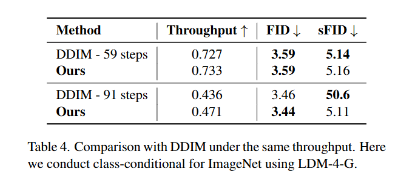 |
|---|
| 表4. 在相同吞吐量下与DDIM的比较。此处我们使用LDM-4-G在ImageNet上进行类别条件生成。 |
| 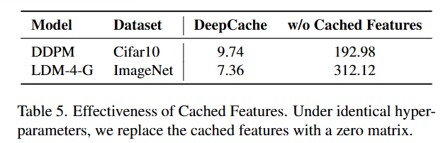 |
|---|
| 表5. 缓存特征的有效性。在相同超参数下，我们将缓存特征替换为零矩阵。 |
| 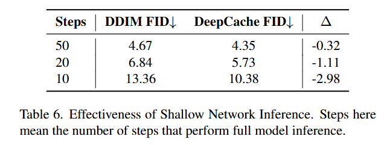 |
|---|
| 表6. 浅层网络推理的有效性。此处的步骤指执行完整模型推理的步数。 |
DeepCache：免费加速扩散模型的补充材料
A. 伪算法
我们在算法1中展示了我们算法的伪代码。它说明了在N步内的迭代生成过程，包括一步完整的模型推理和N-1步部分模型推理。这里，我们以DDPM[17]的采样算法为例。我们的算法适用于其他快速采样方法。
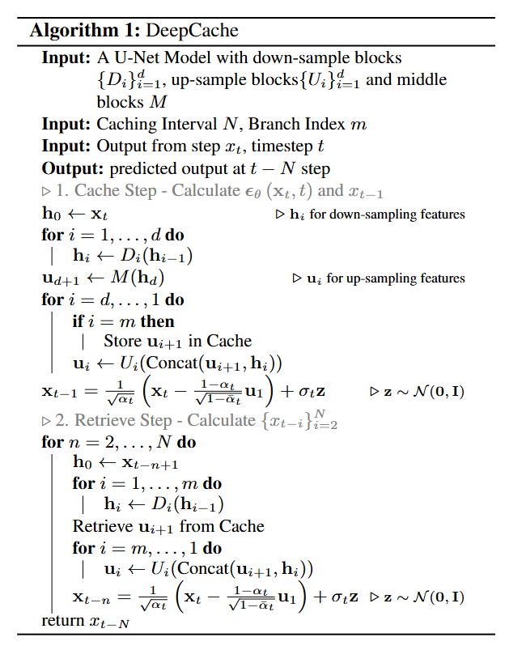
B. 非均匀1:N策略中的超参数变化
在非均匀1:N策略中，涉及的两个超参数是中心c和幂p，用于确定执行整个模型推理的时间步序列。我们在LDM-4-G上测试了这些超参数的影响。结果如表7和表8所示。从这两个表中，可以清楚地观察到一个明显的趋势：随着参数p和c的增加，生成的图像质量起初有所提高，随后出现下降。这种模式证实了该策略的有效性，也与图2(c)中观察到的相似性显著下降的位置一致。
| 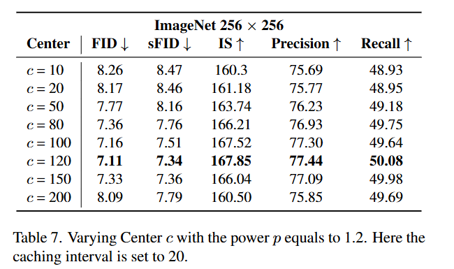 |
|---|
| 表7. 幂p等于1.2时中心c的变化。此处缓存间隔设置为20。 |
| 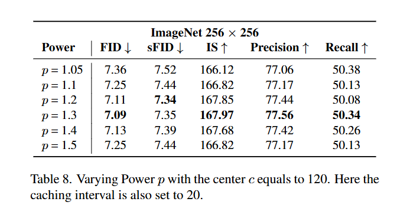 |
|---|
| 表8. 中心c等于120时幂p的变化。此处缓存间隔也设置为20。 |
非均匀1:N的选定超参数 在LDM的实验中，最佳超参数如表9所示。对于Stable Diffusion的实验，我们从集合{0,5,10,15,20,25}中选择中心时间步，从集合{1.1,1.2,1.3,1.4,1.5,1.6}中选择幂值。
| 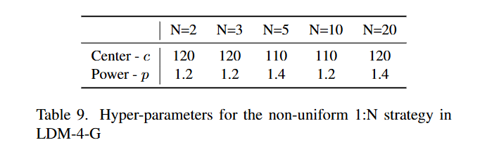 |
|---|
| 表9. LDM-4-G中非均匀1:N策略的超参数。 |
我们实验中使用的最佳超参数值详细列于表10中。
| 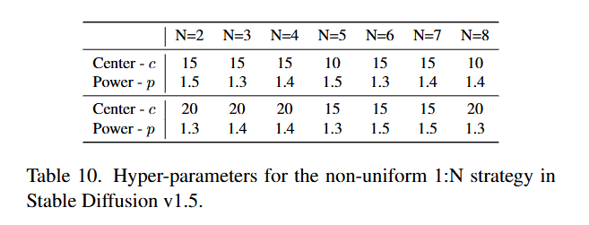 |
|---|
| 表10. Stable Diffusion v1.5中非均匀1:N策略的超参数。 |
从选定的超参数中，我们发现最佳值在不同数据集上略有不同。观察到一个明显的趋势，即大多数最佳参数倾向于以第15个时间步为中心，幂值约为1.4。
C. 非均匀1:N与均匀1:N
我们在图6中展示了Stable Diffusion上非均匀1:N与均匀1:N策略的比较。这里，我们将比较扩展到使用LDM-4G的ImageNet，相应结果详细列于表11中。
| 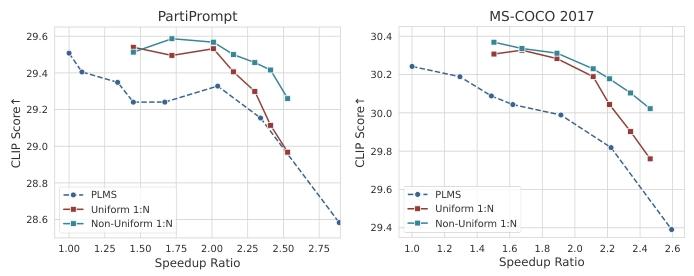 |
|---|
| 图6. PLMS、采用均匀1:N策略的DeepCache与采用非均匀1:N策略的DeepCache之间的对比。 |
与Stable Diffusion上的发现一致，表11中的观察结果呈现出一致的模式。值得注意的是，当采用较大的缓存间隔时，非均匀策略表现出显著的改进，当N=20时，FID从8.23提高到7.36。然而，当处理较小的缓存间隔（N<5）时，该策略并没有提高图像质量。事实上，在某些情况下，它甚至可能导致图像质量略有下降，如N=2时FID从3.39增加到3.46所证明的那样。
| 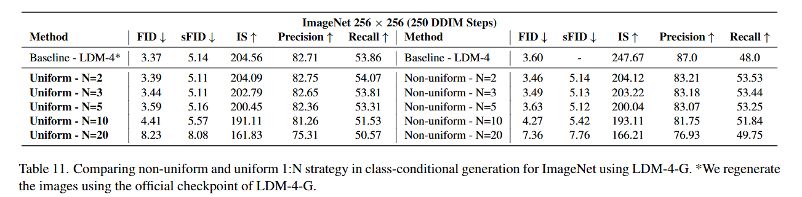 |
|---|
| 表11. 在ImageNet上使用LDM-4-G进行类别条件生成时非均匀和均匀1:N策略的比较。我们使用LDM-4-G的官方检查点重新生成图像。* |
D. 不同跳跃分支的变化
在表12中，我们展示了在改变执行DeepCache的跳跃分支时对图像质量的影响。在我们的实验中，我们采用均匀1:N策略，N=5，DDIM采样仍然采用100步。从表中的结果可以看出，跳跃分支的选择在速度和图像保真度之间引入了一种权衡。具体而言，选择第一个跳跃分支（没有下采样块和一个上采样块）可获得约3倍的加速，同时FID降低到7.14。此外，某些跳跃分支表现出显著的性能变化，特别是第6个分支。结果强调了速度和图像质量之间的另一种权衡，补充了前面提到的与不同采样步骤相关的权衡。这种特定的权衡在模型大小粒度级别上起作用，并且可以在不产生额外成本的情况下实现。
| 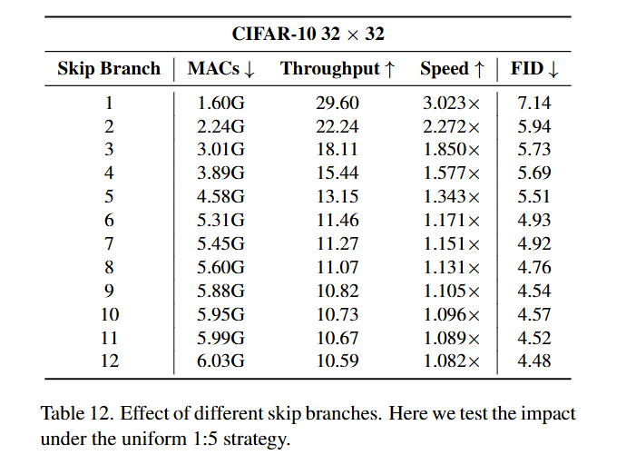 |
|---|
| 表12. 不同跳跃分支的影响。此处我们在均匀1:5策略下测试其影响。 |
E. 提示词
| 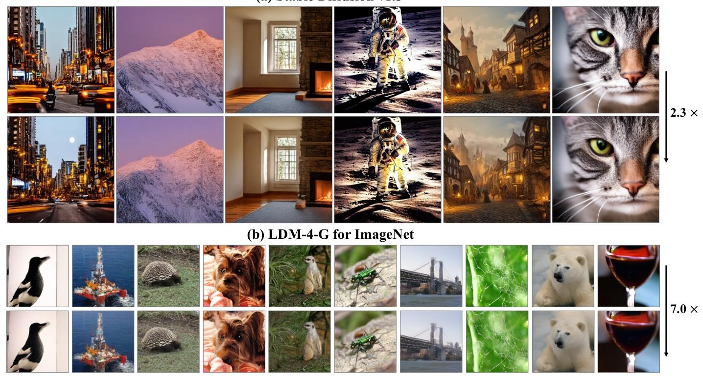 |
|---|
| 图1. 将Stable Diffusion V1.5和LDM-4-G分别加速2.3倍和7.0倍，分别采用50步PLMS和250步DDIM。 |
图1(a)中的提示词：
- 满月照耀下的繁忙城市街道
- 黎明第一缕阳光照亮的雪山峰顶图片
- 黑暗的房间， volumetric光线穿过窗户照在石砌壁炉上，壁炉前有布艺沙发
- 宇航员在月球上的照片
- 中世纪城镇的数字插画，4k，细节丰富，在ArtStation上流行，奇幻风格
- 猫的照片。聚焦光线，打造清晰、分明的边缘
| 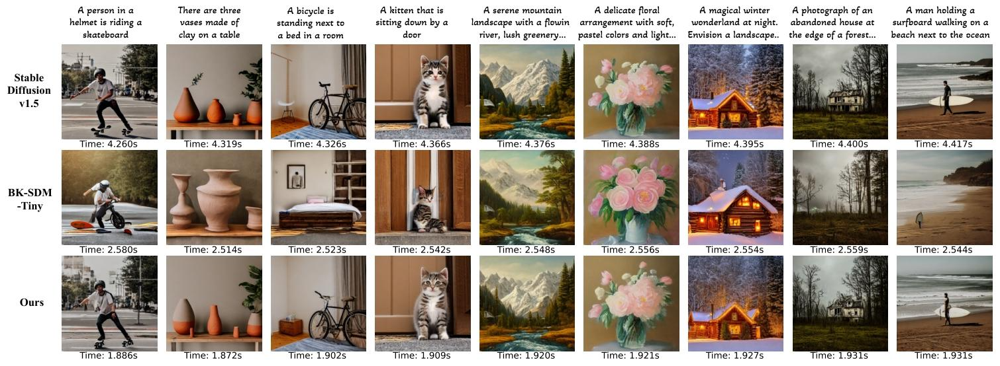 |
|---|
| 图5. BK-SDM-Tiny和DeepCache生成图像的可视化。所有方法均采用50步PLMS。此处的时间为生成单张图像的时长。为简洁起见，部分提示词已省略。详见附录。 |
图5中的提示词：
- 一个戴着头盔的人正在玩滑板
- 桌子上有三个陶制花瓶
- 一个很厚的披萨放在盘子里，已经被拿走了一块。
- 房间里有一辆自行车停在床边。
- 一只小猫坐在门边。
- 宁静的山景，有一条流动的河流、茂密的绿叶，背景是白雪皑皑的山峰，采用油画风格。
- 精致的花卉 arrangement，柔和的 pastel 色彩，轻盈流畅的水彩画笔触。
- 夜晚的神奇冬季仙境。想象一个被新雪覆盖的 landscape，头顶上有闪烁的星星，一间舒适的小屋，烟囱里冒出烟，树上挂着灯笼发出柔和的光芒
- 森林边缘一座废弃房屋的照片，窗户里神秘地闪烁着灯光，背景是暴风雨的天空。高质量摄影，佳能EOS R3。
- 一个男人拿着冲浪板在海边的沙滩上行走。
| 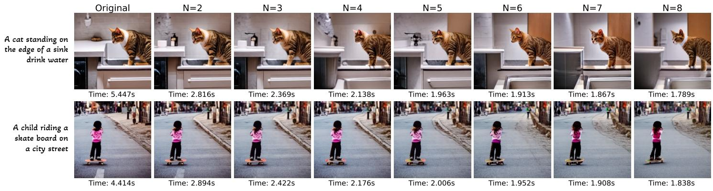 |
|---|
| 图7. 生成图像随缓存间隔N增大的演变示意图。 |
F. Stable Diffusion的详细结果
我们在表13和表14中提供了与图6对应的详细结果。由于没有明确的N来匹配PLMS的吞吐量，我们选择通过探索不同N值的结果来采用另一种方法。此外，我们评估了PLMS算法在不同步骤下的性能。对这些表格中的数据进行分析后发现，当N<5时，图像内容的变化很小，CLIP分数也只有轻微波动。
| 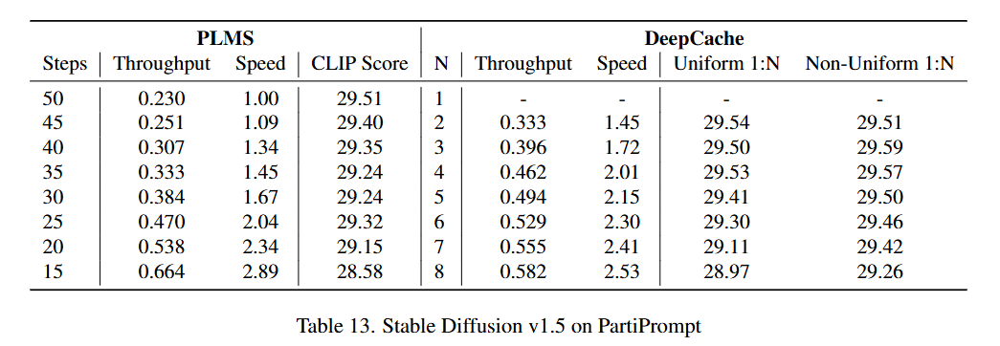 |
|---|
| 表13. Stable Diffusion v1.5在PartiPrompt上的结果。 |
| 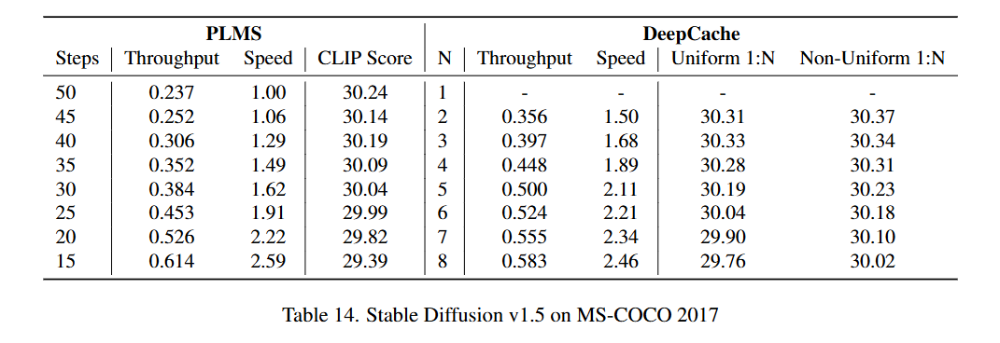 |
|---|
| 表14. Stable Diffusion v1.5在MS-COCO 2017上的结果。 |